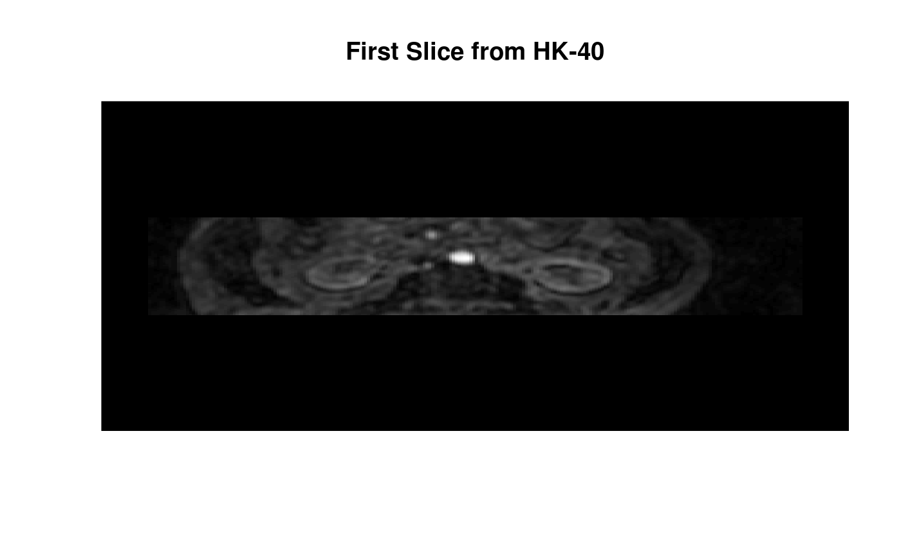
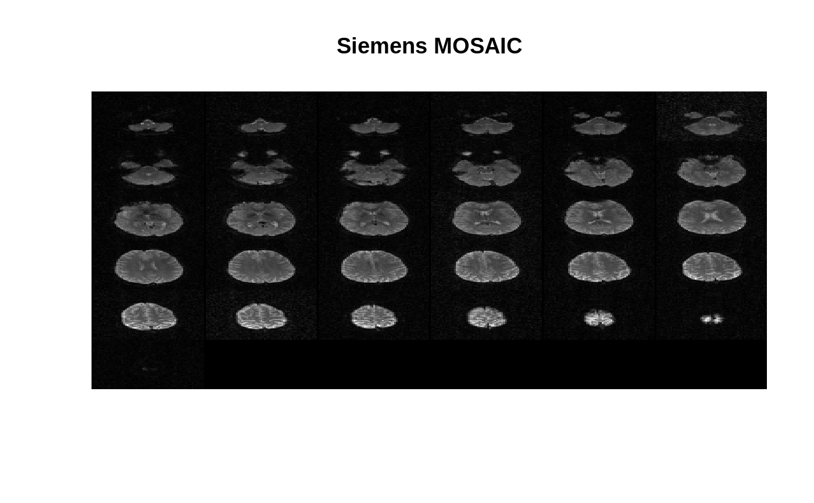
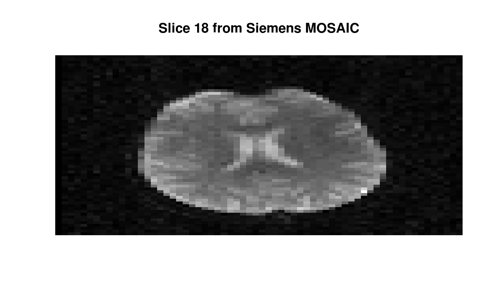

create3D.RdA DICOM list structure is used to produce a multi-dimensional array representing a single acquisition of medical imaging data.
create3D(dcm, mode = "integer", transpose = TRUE, pixelData = TRUE, mosaic = FALSE, mosaicXY = NULL, sequence = FALSE, boffset = NULL) create4D(dcm, mode = "integer", transpose = TRUE, pixelData = TRUE, mosaic = FALSE, mosaicXY = NULL, nslices = NULL, ntimes = NULL, instance = TRUE, sequence = FALSE)
| dcm | is the DICOM list structure (if |
|---|---|
| mode | is a valid character string for |
| transpose | is available in order to switch the definition of rows and
columns from DICOM (default = |
| pixelData | is a logical variable (default = |
| mosaic | is a logical variable (default = |
| mosaicXY | is a vector of length two that provides the (x,y) dimensions of the individual images. Default behavior is to use the AcquisitonMatrix to determine the (x,y) values. |
| sequence | is a logical variable (default = |
| boffset | is the number of bytes to skip at the beginning of the DICOM
file (default = |
| nslices | is the third dimension of the array. Attempts are made to determine this number from the DICOM data. |
| ntimes | is the fourth dimension of the array. Attempts are made to determine this number from the DICOM data. |
| instance | is a logical variable (default = |
Multi-dimensional array of medical imaging data.
Digital Imaging and Communications in Medicine (DICOM)
http://medical.nema.org
array, readDICOM,
storage.mode
load(system.file("hk-40/hk40.RData", package="oro.dicom")) dcmList <- hk40 dcmImage <- create3D(dcmList) image(dcmImage[,,1], col=grey(0:64/64), axes=FALSE, xlab="", ylab="", main=paste("First Slice from HK-40"))imagePositionPatient <- attributes(dcmImage)$ipp dSL <- abs(diff(imagePositionPatient[,3])) plot(dSL, ylim=range(range(dSL) * 1.5, 0, 10), xlab="Image", ylab="mm", main="Difference in Slice Location")if (FALSE) { ## pixelData = FALSE ## The DICOM image data are read from create3D() ## This may save on memory for large batches of DICOM data dcmList <- readDICOM(system.file("hk-40", package="oro.dicom"), pixelData=FALSE) dcmImage <- create3D(dcmList, pixelData=FALSE) image(dcmImage[,,1], col=grey(0:64/64), axes=FALSE, xlab="", ylab="", main=paste("First Slice from HK-40 (again)")) } ## mosaic = TRUE mosaicFile <- system.file("dcm/MR-sonata-3D-as-Tile.dcm", package="oro.dicom") dcm <- readDICOMFile(mosaicFile) image(t(dcm$img), col=grey(0:64/64), axes=FALSE, xlab="", ylab="", main="Siemens MOSAIC")dcmImage <- create3D(dcm, mode="integer", mosaic=TRUE) z <- trunc(dim(dcmImage)[3]/2) image(dcmImage[,,z], col=grey(0:64/64), axes=FALSE, xlab="", ylab="", main=paste("Slice", z, "from Siemens MOSAIC"))